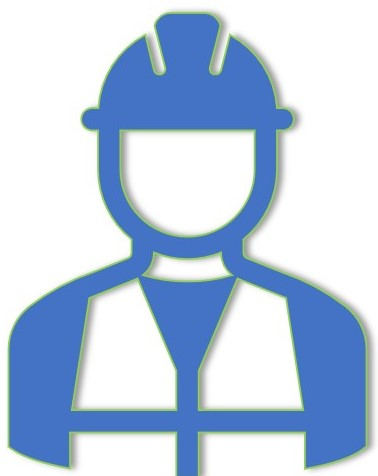

Audit Service
Audits are a tool to systematically analyze whether a company works efficiently according to its own plans. A proper audit is covering agreed areas and (in order to avoid blindness at ones’ own achievements or omissions) is performed by persons not directly responsible for the audited area. JohdossakoVikaa offers its customers two kinds of audits with any scope suitable for customer:
- Internal Audits (also called ”First Party” audits) where a company is checking its own work, and - Supplier Audits (also called ”Second Party” audits) where a company is checking its suppliers’ work, often with supplier factory visit. - JohdossakoVikaa is not giving official ”Third Party” accredited certificates.
Risks and Failure Modes Analyses
In many trades where eithere the products are complicated or results of product failures are serious, such as medical devices, cars and aviation, an essential mandatory part of development processes is risk management. But risk thinking can be applied also in simpler environments.
JohdossakoVikaa can be hired to help using systematic methods such as Failure Mode and Effects Analysis (FMEA) in design (DFMEA) and/or production (PFMEA) analysis.
- 
Management development
The original ISO 9001 ”general” management system standard has been expanded to numerous subject specific ones such as for Medical Devices, Testing and Calibration, Environment, Occupational Health and Safety...and so on. A natural starting point for most development could be with the general standard and then expanding seeking advice from the detail standard on the specific challenges of the company. Many of the standards are supported with guidelines for additional advice.
JohdossakoVikaa offers help to develop management systems both by auditing and/or by creating the system’s procedures, record templates and work instructions – management system from JohdossakoVikaa and technical content from the customer.